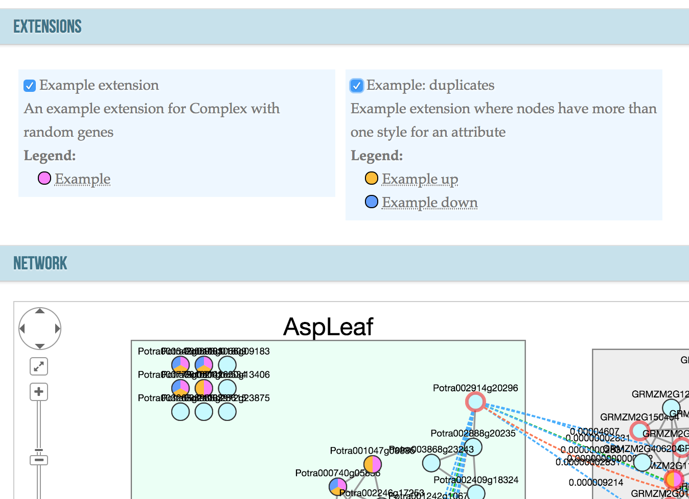
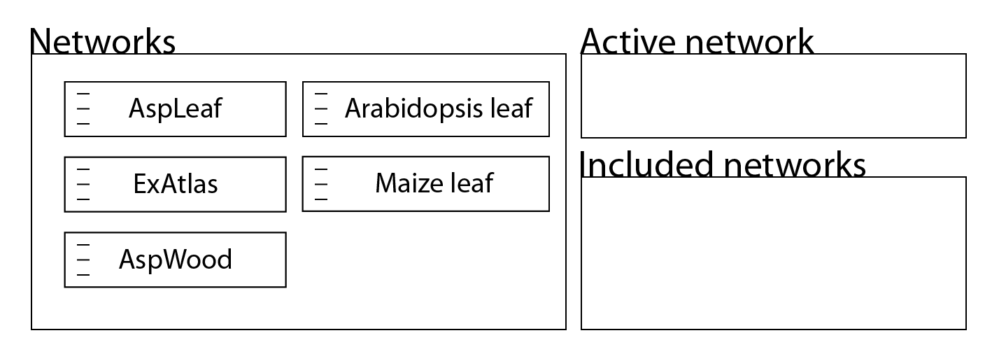

A collection of issues and how I solved them
(or how I didn't)
Niklas Mähler, Group meeting 2018-10-12

Complex
Visualisation
The problem
How to visualise additional information on the network in a general way
First tries involved creating new tables for each of the additional properties that we wanted to visualise
- Not very general
- Database layout will be different depending on data
Extensions for nodes and edges
Add three general tables
extension table
| Variable | Description |
|---|---|
name |
Name of the extension |
description |
Free text description |
| Definition of the score associated with the extension |
extension_gene table
| Variable | Description |
|---|---|
gene_id |
Gene for which the extension should be applied |
extension_name |
Name of the extension this belongs to |
score |
Score of this gene for this extension |
extension_edge table
| Variable | Description |
|---|---|
gene_id1 |
Source gene |
gene_id2 |
Target gene |
network_id1 |
Network that the source gene belongs to |
network_id2 |
Network that the target gene belongs to |
extension_name |
Name of the extension this belongs to |
score |
Score of this gene for this extension |
These tables together with a config file for each extension makes it possible to display multiple extensions for each gene in a very flexible way.
Complex
User interface issue
The problem
How to indicate selected networks and what is the active network?

Possible solution: drag-and-drop
Possible improvements
- Species indicator of some kind
Spruce assembly
Managing 4.5 million SLURM jobs
Overview
- Split sequence data into 3016 blocks of 200 megabases
- Align all blocks against eachother
- Keep track of repeat regions
Approach
- Write a python library
- Store jobs in an SQLite database
- Submit jobs and check their status
- Restart jobs/masking server if things fail
Easy!
Spruce assembly
Dependency hell
Problem: dependencies
- Each job is dependent on the masking server
- Masking server needs a lot of memory
- We need to know where the masking server is running
First solution
Choose a node where the masking server has to run
Pros
- Easy to implement
- We know the IP of the masking server immediately
- We can queue alignment jobs immediately
Cons
- It might take a long time for the masking server to start
- Masking server IP hard-coded in the alignment scripts
Second solution
Let SLURM choose the node and store the masking server status in the database
Pros
- The masking server starts faster
- No hard-coded IP
- We can still queue alignment jobs immediately
Cons
- If the masking server goes down, it is likely that the IP changes and we have to restart all alignment jobs
Spruce assembly
SLURM can be reaaaaally slow
Problem
Jobs are submitted one by one, and this can be really slow, and sometimes even fail if SLURM is very busy
Traceback (most recent call last):
File "/proj/uppstore2017145/V3/software/miniconda3/envs/marvel/bin/marvelous_jobs", line 11, in
sys.exit(main())
File "/proj/uppstore2017145/V3/software/miniconda3/envs/marvel/lib/python3.6/site-packages/marvelous_jobs/__main__.py", line 542, in main
update_and_restart()
File "/proj/uppstore2017145/V3/software/miniconda3/envs/marvel/lib/python3.6/site-packages/marvelous_jobs/__main__.py", line 352, in update_and_restart
dj.start()
File "/proj/uppstore2017145/V3/software/miniconda3/envs/marvel/lib/python3.6/site-packages/marvelous_jobs/job.py", line 167, in start
return super().start(str(self.block_id1), str(self.block_id2))
File "/proj/uppstore2017145/V3/software/miniconda3/envs/marvel/lib/python3.6/site-packages/marvelous_jobs/job.py", line 54,
in start
raise RuntimeError(output[1].decode('utf-8'))
RuntimeError: sbatch: error: Batch job submission failed: Socket timed out on send/recv operation Possible solution
Instead of submitting single jobs, switch to job arrays
Job arrays
- Requires all jobs to have the same configuration
sbatch --array=1-20 ...- Sets the variable
$SLURM_ARRAY_TASK_ID - Use this to access jobs in the database
#!/bin/bash -l
#SBATCH -t 1:00:00
#SBATCH -n 4
set -eu
project=$(sqlite3 /scratch/marvelous_test/testdb "SELECT name FROM project")
block1=$(sqlite3 /scratch/marvelous_test/testdb "SELECT block_id1 FROM daligner_job WHERE rowid = $SLURM_ARRAY_TASK_ID")
block2=$(sqlite3 /scratch/marvelous_test/testdb "SELECT block_id2 FROM daligner_job WHERE rowid = $SLURM_ARRAY_TASK_ID")
maskip=$(sqlite3 /scratch/marvelous_test/testdb "SELECT ip FROM masking_job")
if [[ false = true ]] && [[ -z $maskip ]]; then
echo >&2 "error: no masking server available"
exit 1
fi
/proj/uppstore2017145/V3/software/marvel/bin/daligner -v -I -t 20 -e 0.7 -j 4 "${project}.${block1}" "${project}.${block2}"Pros
- We can submit thousands of jobs in a fraction of a second
Cons
- Requires quite a lot of reworking of the code
Tests
Started writing tests for the package using nose